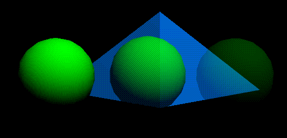

[N-World Contents] [Book Contents] [Prev] [Next] [Index]
Rendering Concepts
The Attributes Editor lets you define both materials and lights, the two components necessary to create rendered images. Materials described the surface attributes of a rendered object, while lights provide illumination. This chapter summarizes some basic rendering concepts.

What is Rendering?
In its most basic form, an object in N-Geometry appears as a wireframe, three-dimensional shape. An object might represent something simple (like a geometric shape) or a complex character for a video game.
To generate a realistic picture of the object, or render it, you need to:
Both materials and lights have a number of attributes, which can be modified using the Attributes Editor. Depending on the attributes you specify, rendered objects can have almost an infinite variation in their appearance:
Figure 1.1 Left, wireframe object, middle, rendered with single color, right, rendered with texture map
Some of these attributes correspond to visual characteristics found in the physical world (such as color or opacity), while others have no such counterpart but help simulate a realistic appearance (such as reflection maps).
Rendering a Scene in N·World
From the Attributes Editor
To render the scene currently in the N-Geometry window from the Attributes Editor:
Depending on your preference settings, the rendered frame will be displayed in the Nichimen Render window, or on the Paint Canvas (see "Output Window," on page 3-6).
From N-Geometry
To render the current frame of N-Geometry from N-Geometry:
From N-Dynamics
To render a frame from N-Dynamics, include a Render Scene operation in a channel in your script. When your script is executed, a render occurs at each frame. For more information see the N-Dynamics Reference Guide or N-Dynamics Tutorial.
Render Performance
To decrease the amount of time rendering operations consume, make the render output directory local to the machine (which avoids any network traffic). See the section "Output Directory," on page 3-6.
If you plan on rendering on more than one machine, set up the render output directory to be local to each machine. Again, if you don't localize the output, render operations may be noticeably slowed as a result of network overhead. You'll also want to periodically remove files from this directory to conserve disk space.
For additional speed up suggestions, see Appendix C, "Increasing Render Speed," on page C-1.
Render Domains
After you assign render attributes to an object, you typically want to do one of three things:
For each use, you'll want to specify a different render domain when defining render attributes. A render domain is essentially a "template" that includes all the possible attributes you can use when assigning attributes for a given target.
N·World currently supports the following render domains:
The Sony PSX, N64, and Sega domains may or may not be available to you, depending upon which Nichimen Express products are installed on your system.
The Sony PlayStation, Nintendo 64, and Sega Saturn all render 3D objects interactively-this means that you assign colors and textures to your objects using the Attributes Editor, then export those object to the target game platform. Different platforms support different features, and the different express domains let you create attributes that take advantage of the special features of each platform.
One Material Supports Multiple Domains
A material contains "slots" for each render domain. When you first create a material, you do so for the currently selected domain. If you want to use that material in another domain, you can simply copy it to another domain right in the Attributes Editor.
Figure 1.2 Top, material with attributes defined for one domain; middle, with attributes copied to a second domain; bottom, with attributes for all domains. Custom domains (*) can be created using Nichimen's Wide Open World developer kit
For example, let's suppose you created a GL Shade material called red. After designing your object, you decide that you also want to send the object to the N64. Rather than creating a separate red material for each platform, you can copy the attributes from any domain to any other within the same material. You can modify attributes in each domain independently of one another-for example, you might need to change the Diffuse Color in the N64 domain slightly to match the red in the GL Shade domain.
Assigning Materials
A material is a collection of attributes that you have named and that you can assign to an N-Geometry object. After you create a material, you can assign the same attributes to different N-Geometry objects by using the same material. A change to any attribute in a material affects any objects or face part that use that material. Materials can be saved to file and reused later.
Inheriting Materials
You can make one material inherit changes made to another, so that changes made in one material "ripple through" other materials.
Suppose you were working several objects, then discovered that certain characteristics were shared by more than one of those objects. You might, for example, have a number of buildings with a stucco finish, which are each a different color.
If you defined a different material for each building, you'd probably create one material, make a copy of it, change an attribute or two, then repeat the process until you had a number of materials whose only difference was their diffuse color.
Figure 1.3 Materials without inheritance
However, what if you decided upon rendering the scene that the "stucco" didn't jump out quite enough, and you wanted to modify the bump maps used to create the stucco feel of the surface? You'd have to open each material and modify the bump map value by hand.
As a better, you could define a set of inherited materials. Instead of creating a new material for each building, you could create a base material called Stucco. For each building, you could create a new material that inherited most of its characteristics from Stucco.
Figure 1.4 Materials inheriting from another material
In the relationship shown in Figure 1.4, any changes that you made to the Stucco material would automatically be reflected in Red, Blue, and Pink. If you wanted to deepen the bump map for all the stucco buildings, you would only have to modify the values in Stucco; when the scene was re-rendered, Red, Blue, and Pink which all inherit from Stucco, would now use the modified bump map values too.
Inheritance between materials can be defined in either the Attributes Editor or the Browser.
Rendering with N-Render or GL Shade
There are several basic steps that you'll use to render a scene using N-Render or GL Shade:
1. Create your objects in N-Geometry.
- Your scene may contain any number of objects.
2. Create lights to illuminate the object.
- You can create lights in N-Geometry or in the Attributes Editor using the Lights Editor.
3. Create materials using the Attributes Editor.
- Materials are sets of attributes that determine the basic surface appearance of an object. A material also specifies which lights affect the current material.
4. Assign materials to your objects.
- Materials are assigned in N-Geometry the Browser, Nichimen's visual hierarchy manager.
- Note. You can also assign a material to face parts of objects.
5. Render the scene.
- You can render the scene directly from N-Geometry, from the Attributes Editor, or from an N-Dynamics script. You can output the resulting image to a file, a separate render window, or directly to the N-Paint canvas.
Figure 1.5 Rendering objects with N-Render
Rendering scenes is typically an iterative process-you may modify the materials and lights used to render a scene any number of times in the Attributes Editor until the scene looks just right.
Rendering with the Game Domains
If you are preparing an object for export to a game platform, the steps are slightly different than described for the GL Shade and N-Render domains:
1. Create your objects in N-Geometry.
- Your scene may contain any number of objects.
2. Create lights to illuminate the object.
- You can create lights in N-Geometry or in the Attributes Editor using the Lights Editor.
3. Create materials using the Attributes Editor.
- Materials are sets of attributes that determine the basic surface appearance of an object. A material also specifies which lights affect the current material.
4. Assign materials to your objects.
- Materials are assigned in N-Geometry the Browser, Nichimen's visual hierarchy manager.
- Note. You can also assign a material to face parts of objects.
5. Preview your objects on the target platform.
- Objects can be previewed interactively on the appropriate target platform by the artist.
6. Write your object files out in the appropriate format.
- Once objects look correct, you can write them out in target specific formats, using tools like the N64 Express, PlayStation Express, and Saturn Express.
Figure 1.6 Using one of the game domains
Assigning materials for use on the various game platforms is described in more detail in the appropriate N64 Express, PlayStation Express, and Saturn Express documentation.
Rendering: Some Concepts
This section describes some of the basic concepts used in rendering in N·World.
Scan Line vs. Ray Trace Rendering
If you are rendering with the N-Render domain, you are creating a 2D image from a 3D scene, taking into account the surface attributes and lighting effects in place for the object.
N-Render supports two basic rendering techniques for calculating the value of each pixel in the 2D image:
Scan line rendering is the simpler of the two. In this model, light rays are emitted by a light source and travel through the scene. Each interaction with an object in the scene affects the color value of the pixel that the ray maps to. Rays travel until one of two things happens:
Figure 1.7 Scan line rendering
The color value for each pixel is calculated based on the surface color of the "ray" encounters. Attributes associated with these objects determine the result of the color calculation.
Ray trace rendering, on the other hand, uses a more realistic model which allows for rays to "bounce" off of objects in the scene. Rays begin with a certain amount of "energy" and lose some of the energy with every bounce. These interactions can result in the creation of new rays, which must be traced and their effect on pixels in the finished image calculated. Rays travel until they "bounce" a predetermined number of times, or expend their energy.
Figure 1.8 Ray trace rendering
Mappers & Maps
A map is a two-dimensional image which is projected, or mapped, onto the surface of a 3D object.The topological relationship between the 2D map and a 3D object is defined by a mapper. Mappers are a special type of object, which you create in the Browser or N-Geometry. You choose a mapper through which to project texture maps for a given material in the Nichimen Browser.
The mapper object provides a visual cue of the relationship of the map image to the object. Mappers can be in one of two states:
The types of maps supported vary by domain, but include the following:
Figure 1.9 Map types: from left to right, (1) texture, (2) bump+texture, (3) texture+reflection, (4) texture+reflection+refraction, (5) texture+opacity
Shading Models
N-Render uses shading models to simulate the realistic (and sometimes non-realistic!) characteristics of material surfaces as they interact with light sources. It is the combination of render attributes, light sources, and the Shading Model which determines the final appearance of a rendered object.
N-Render uses five different shading models:
Figure 1.10 Shading models: from left to right, Flat, Lambert, Phong, Blinn, and Cook
All of these models are described in more detail in the next chapter.
Opacity
An object's opacity determines how much of the scene behind that object is visible. You can modify an object's opacity uniformly with the Color Opacity attribute, or use an opacity map to make some areas opaque and others transparent.
In other words, the more opaque an object, the less you can see of what's behind it. To render an object as a brick, you'd want to use a high opacity setting; for a sheet of glass, you'd use a lower opacity setting.
Figure 1.11 The sphere in the foreground of the scene has an opacity map applied to it, making some areas of the object transparent
Visibility
Unlike opacity, which affects only the diffusive component of the shading model, the visibility parameter affects all three components of an object (ambient, diffusive, and specular). The most common use of the visibility parameter is to fade or dissolve an object in or out of a scene.

Figure 1.12 Left, original object; object with 75% visibility; right, with 25% visibility. In all three cases, the sphere is in front of the pyramid
To grasp the difference between visibility and opacity, compare an object whose opacity is decreasing until the object is completely transparent with an object whose visibility is decreasing until the object becomes invisible. The specular gleam from the completely transparent object remains clearly visible, but the invisible object gives off no specular gleam at all. You can illustrate the difference for yourself by animating a sequence in N-Dynamics, first animating visibility, then trying the same animation animating opacity.
Lights
All light sources are N-Geometry objects. Creating lights and defining their attributes is described in both "Lights," on page 4-1, and in the N-Geometry Reference Guide.
N-Render supports the following types of lights:
Just as you specify attributes for a material, you also specify attributes for a light (such as the light's color, relative brightness, shadow casting characteristics, and so forth. Working with lights is discussed in more detail in "Lights," on page 4-1.
Oblique Effects
Oblique effects let you model objects whose opacity varies as a function of the angle of the eye to the object's surface.
A soda bottle with thick glass walls serves as a good example of such an object. More light is obscured toward the edges because the light must travel farther through the glass at the silhouette edges. (The inverse effect is also possible in N-Render, with the result that opacity fades out toward the edges. This is useful in producing "glow" effects.)
Figure 1.13 Oblique effects
For example, line of sight A has to look through more glass, while line of sight B looks through a very thin piece of glass. Oblique effects let you simulate the change in appearance of such oblique points of view.

Figure 1.14 Left, sphere object with low opacity at edges; right, same object with high opacity at edges
If you use oblique effects, you need to specify the falloff rate for diffusion, opacity, specular strength, reflection, and refraction from the center of the object to the edge of the object in the Effects section of the Attributes Editor.
[N-World Contents] [Book Contents] [Prev] [Next] [Index]
 Another fine product from Nichimen documentation!
Another fine product from Nichimen documentation!
Copyright © 1996, Nichimen Graphics Corporation. All rights
reserved.